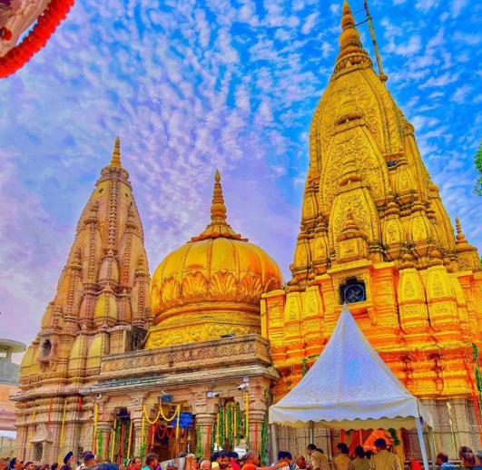
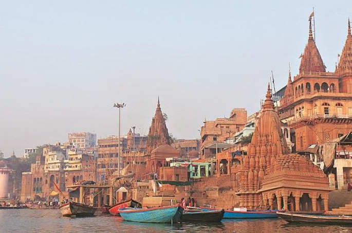

Photo Gallery




One of the holiest and most famous Hindu temples dedicated to Lord Shiva
Kashi Vishwanath Temple, located in Varanasi (Uttar Pradesh), is one of the twelve Jyotirlingas and holds immense cultural, spiritual, and historical significance. The temple is situated on the western banks of the holy river Ganga.
City: Varanasi, Uttar Pradesh
Nearby: Ganga Ghat, Dashashwamedh Ghat, Sarnath
Description: The temple is a major pilgrimage spot with ancient architecture, spiritual atmosphere, and easy access to Ganga Aarti and nearby tourist attractions.